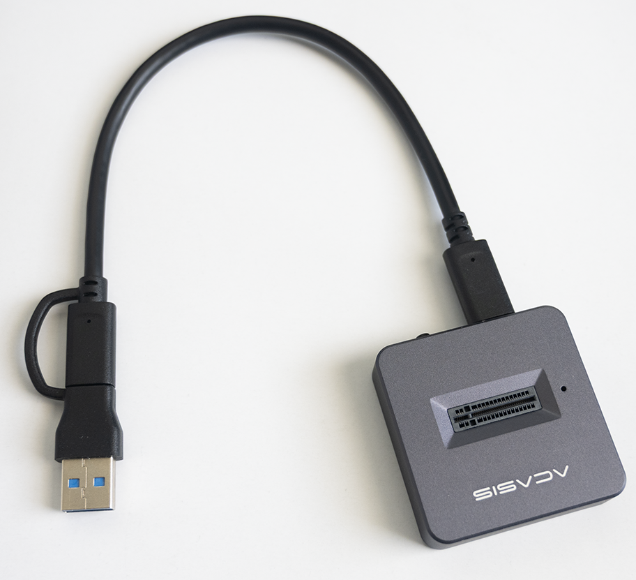

This page describes how to image an SD card, an SSD, or an NVMe disk for use by Allsky.
In the instructions below, a storage device refers to either an SD card, an SSD, or a NVMe disk because the instructions for all of them are almost identical.
The two main scenarios when imaging a storage device are described below.
Hardware required
Before you begin make sure you have the necessary adapter to plug your storage device into a PC, Mac, and/or Pi.
If you plan to use an SSD or an NVMe disk, make sure they fit in your allsky camera case.
SD card
You'll need an adapter that allows the SD card (technically a "micro SD card") to plug into a USB port on your Pi, PC, and/or Mac.The easiest way is with an inexpensive device like this: You simply plug the card into the back of the adapter and plug the adapter into a USB-B port.
If you have a computer with an SD card reader, a device like this works well:
You plug the micro SD card on the left into the adapter on the right, then plug the larger adapter into your computer.SSD
You need an adapter cable that connects the SSD to your PC, Mac, or Pi's USB port.- If the SSD is an "external" unit with a case around it, it likely came with the cable.
- If the SSD is an "internal" unit with no case, like in the picture below, you'll need a SATA-to-USB-B adapter like the one in the picture. The SSD plugs into the SATA end of the adapter and you plug the USB end into your PC, Mac, or Pi.
NVMe drive
If you have a Pi 5 or above the ultimate storage device is an NVMe disk. These disks are significantly faster and more reliable than an SD card, and can hold more data.In order to use one you'll need a "HAT" which is a "Hardware On Top" board that is attached to a Pi, as shown below: This is the official Raspberry Pi M.2 HAT which sits on top of the Pi and accepts 30mm and 42mm NVMe disks (the white rectangle in the picture).
Other brands have boards that go underneeath the Pi and accept up to 80mm boards, which hold more data and tend to be faster.
In order to connect the disk to your PC or Mac you'll need an adapter like below. The disk plugs into the unit on the right.

Scenario 1: New Pi or "starting over"
This scenario is used when:
- you have a new Pi
- you want to use a new storage device
- you want to "start over" and re-image your existing storage device
Do the following:
- Connect your storage device to your PC or Mac using the appropriate adapter.
- Download the Raspberry Pi Imager> to a PC or Mac.
- Start the Pi Imager and choose your "Raspberry Pi Device".
- Choose your "Storage" (where to write the operating system to - your storage device). If nothing appears in the list then the Imager can't find your device; make sure it's plugged in and your computer can see it.
- Choose the Pi "Operating System".
Select the (Recommended) entry which is usually the first one. For Pi 4 and newer models, that will be Raspberry Pi OS (64-bit). For older models it will be Raspberry Pi OS (Legacy, 32-bit).
Allsky installs many of the packages used by the "Desktop" version so we suggest installing it.
- Press "NEXT".
- When asked to apply OS Customisation settings press
EDIT SETTINGS and make these changes:
Do not skip this step unless you enjoy pain!
Skipping it means you'll need to make those changes after turning your Pi on the first time. Wi-Fi won't work so you'll need to use a wired connection to the Pi, or connect a monitor, keyboard, and mouse to it.- GENERAL tab:
- Set hostname:
allsky
unless you have multiple Pi's on your network in which case they must all have unique names. - Set username and password:
piand whatever you want for the password. - Configure wireless LAN:
it's MUCH easier to do this now rather than after your Pi is running. - Set local settings:
This doesn't actually change the "Locale"; it just changes the time zone and keyboard layout. Allsky will prompt for the Locale during installation.
- Set hostname:
- SERVICES tab:
- Enable SSH - Use password authentication
- GENERAL tab:
Make sure your Pi is turned off, then disconnect the storage device from your computer and plug it into the Pi. Power up the Pi; after it boots, install Allsky and your favorite programs.
Scenario 2: Use a new storage device but keep some files from the old device
In this scenario, you have a working Pi and want to use a new storage device AND keep some files from the existing storage device. Files like your Allsky images, darks, and configuration files are usually kept.
This is typically done because:
- you want a device with more disk space
- you want a device with better performance
- your current device is physically going bad
- your are seeing lots of strange behavior and suspect Linux files are corrupted
- your current device is getting "cluttered" and you want to start over with a clean install
The instructions differ depending on if you have one, or two, storage devices.
You have one storage device
If you don't have a second storage device,
consider getting one and use the instructions below - it's much easier.
Otherwise, do the following:
- Stop Allsky:
sudo systemctl stop allsky. - Copy ~/allsky plus any other
files, images, etc. you want to keep from your SD card to a
USB drive, PC, Mac, or another device.
If you have modules in /opt/allsky, copy that directory as well. Suggestion: name its backup directory opt-allskyYou can easily copy files between a Pi and a PC/Mac if you run
allsky-config sambaon your Pi and follow the instructions. - Shutdown the Pi and remove power.
- Remove the storage device from the Pi.
- Image the storage device using the instructions above.
- Plug the newly-imaged device back into your Pi and turn the Pi on.
- Copy your saved files back to the storage device:
- Copy the saved ~/allsky directory to ~/allsky-OLD on the newly-imaged device.
- If you saved /opt/allsky,
copy that directory to the newly-imaged storage device using
sudo.
- Install Allsky and tell the installation you want to use the prior version of Allsky; it will then restore your saved images, darks, and configuration files.
You have two storage devices
In the instructions below,
your current storage device is called the old device
and the second device is called the new device.
- Image the new device using the instructions above.
- If the new device is:
- an SD card or SSD, use the appropriate adapter to plug the device into a USB 3 port on the Pi (or USB 2 port if your Pi doesn't have USB 3).
- an NVMe disk,
turn the Pi off and connect the NVMe HAT and the NVMe disk
per the manufacture's instructions.
Turn the Pi back on.
The Pi should boot off the old device with the new device connected. To verify, runcd; ls allsky. It should list the contents of the allsky directory. If instead, you get an error, the Pi booted off the new device.
Do NOT continue; instead, search on the Internet for how to boot off an SD card when an NVMe disk is also installed.
- Determine the path name to the new device by running
allsky-config get_filesystemsand following any instructions it provides. - Copy the ~/allsky directory on the old
device to the new device.
If your new device is in /media/SSD, run:
sudo cp -Ra ~/allsky /media/SSD cd /media/SSD mv allsky allsky-OLD
- If /opt/allsky exists, copy it to the new device:
sudo cp -Ra /opt/allsky /media/SSD/opt
- Copy whatever other files you want from the old device to the new one. This normally includes files in your login's home directory. Don't forget hidden files that begin with ..
- Run
cd; touch OLD_DEVICEto create a file called OLD_DEVICE on the old storage device. This will allow you to easily determine which device is the old one in subsequent steps. - Shutdown the Pi and remove power.
- Switch the old and new devices on the Pi.
For example, if your old and new storage devices are SD cards, remove both cards, then put the old card in the USB adapter and the new card in the SD slot on the Pi. - Turn the Pi back on. It should boot from the new device with the old device connected.
- Run
cd; ls OLD_DEVICE. You should get an error that "OLD_DEVICE does not exist". That's because it's only on the old device and you are now on the new device.
If you do NOT get an error that means the Pi booted off the old device. Check your work. - Install Allsky and tell the installation you want to use the prior version of Allsky; it will then restore your saved images, darks, and configuration files.
- When you are sure you've copied everything you want, unplug the old device from the Pi. It's suggested to leave the old device as is, in case you later need to copy additional files on it to the new device.